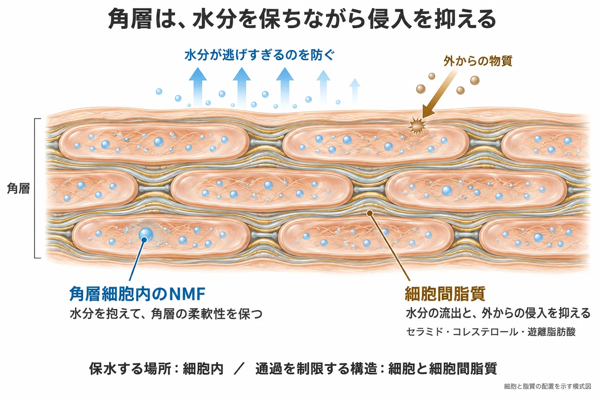
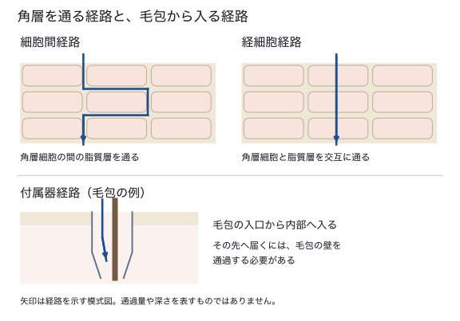
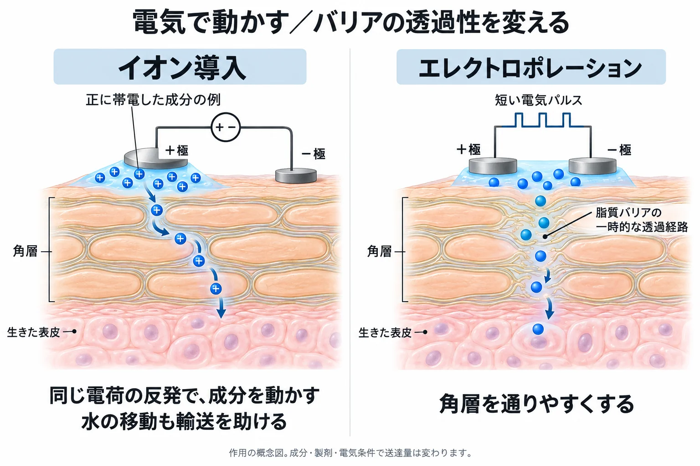
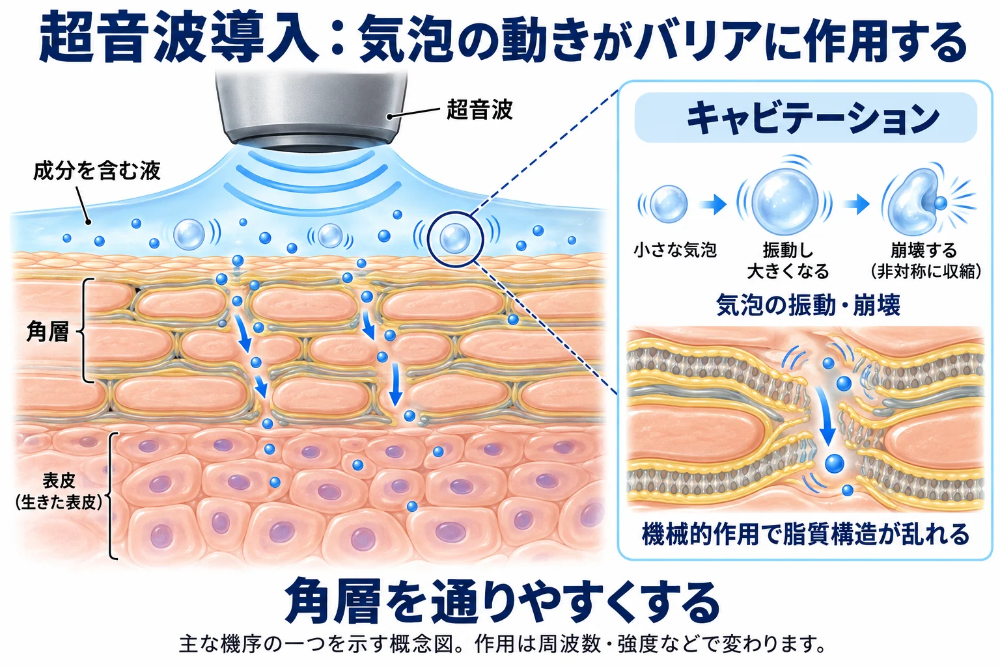
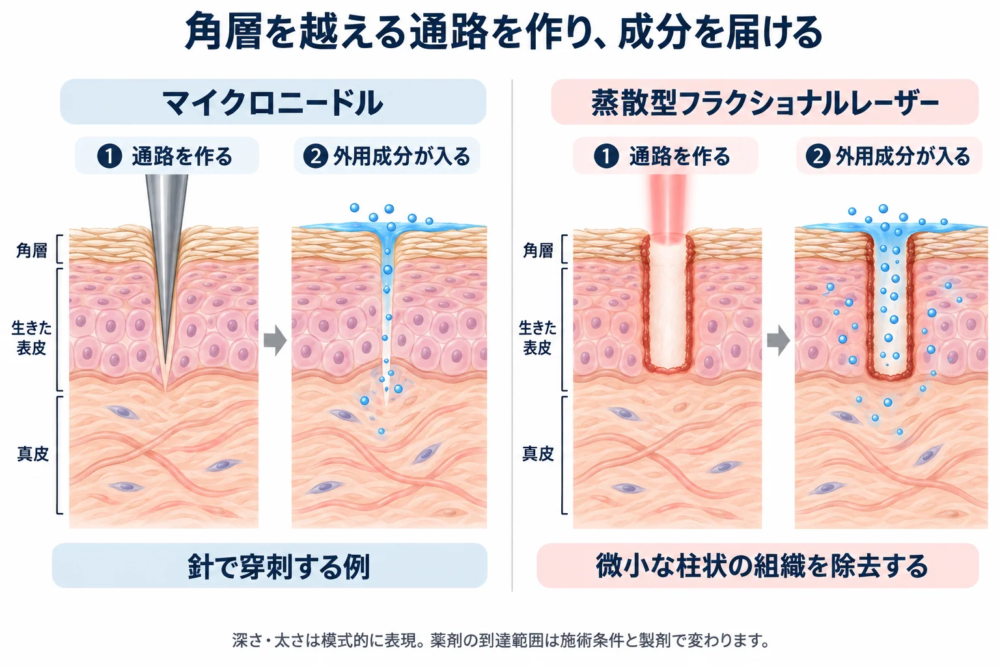

美容皮膚科 ／ 外用
角層バリアと経皮吸収percutaneous absorption
公開 2026-10-29
角層は、体内から水分が逃げるのを抑え、外からの物質が入り込むのを制限しています。乾燥や刺激を防ぐスキンケアは、このバリアを支えるものです。一方、外用薬や美容医療の導入では、目的の成分をこのバリアの内側へ届ける必要があります。
この章の一言
角層細胞と細胞間脂質が通過を制限し、角層細胞内の天然保湿因子（NMF）が水分を保ちます。 外用を考えるときは、まずどこで働かせたいかを決め、その成分がどの経路で、どの程度届くかを考えます。導入法は、分子を動かす力を加えたり、バリアの透過性を変えたりして通過を助けます。
1 角層は、細胞と脂質でバリアを作る
表皮の最も外側にある角層は、核を失った扁平な角層細胞（corneocyte）が重なり、その間を細胞間脂質が満たす構造です。角層細胞をレンガ、細胞間脂質をモルタルにたとえると、二つの位置関係が分かります。角層ができる過程は表皮とターンオーバーで扱っています。
角層細胞は強度を保ち、細胞間脂質は通過を制限する
角層細胞の内部にはケラチン線維が詰まり、周囲は架橋されたタンパク質の膜で補強されています。平たい細胞が重なり合うことで、摩擦などに耐える構造になります。
細胞間脂質の主要成分は、セラミド・コレステロール・遊離脂肪酸です。これらが何層にも並ぶ構造をラメラ構造と呼びます。水や外用成分が細胞の間を移動するには、この密に並んだ脂質層を通る必要があります。これが、水分の流出と外からの侵入を抑える重要な仕組みです。ヒト角層脂質の研究
皮膚表面を覆う皮脂と、角層細胞の間にある細胞間脂質は、場所も組成も異なります。皮脂が多く見える肌でも、角層の保水やバリアが十分とは限りません（→ 皮脂分泌の生化学）。
2 水を抱えるNMFと、水分を逃がしにくくする脂質
NMF（natural moisturizing factor：天然保湿因子）は、角層細胞の中にある、水分を抱え込む小さな物質の集まりです。アミノ酸やその誘導体などを含み、その多くはフィラグリンの分解から生じます。NMFが水分を保つことで、角層はしなやかさを維持できます。角層NMFの研究

保湿剤の働き：ヒューメクタント・エモリエント・閉塞剤
保湿剤は、主な働きによって次のように呼び分けます。
| 呼び方 | 働き | 成分の例 |
|---|---|---|
| ヒューメクタント（humectant） | 水分を抱え、角層の水分量を保つ | グリセリン、尿素など |
| エモリエント（emollient） | 角層を柔らかくし、肌表面を滑らかにする | スクワランなどの油性成分 |
| 閉塞剤（occlusive） | 皮膚表面に膜を作り、水分の蒸発を抑える | ワセリンなど |
一つの成分や製剤が、複数の働きを持ちます。 例えばワセリンは蒸発を抑えるとともに、皮膚を柔らかく滑らかにします。また、エモリエントという言葉は、保湿製剤全体を指す意味でも使われます。用語の整理：DermNet
グリセリンなどで水分を保ち、ワセリンなどで蒸発を抑えるように、製剤では異なる働きを組み合わせます。Vaillantら, 2020
セラミドなどを補って細胞間脂質のバリアを支えることも保湿の一つです。その働きは、成分名だけでなく配合や製剤設計によって変わります。
弱酸性の環境も、バリアの維持に関わる
角層表面に向かって形成される酸性環境は、脂質を加工する酵素や、角層細胞の接着を調節する酵素の働きに関わります。pH勾配と落屑の仕組みは表皮とターンオーバーで説明しています。
弱酸性のスキンケアと、洗浄成分の影響
皮膚の酸性環境を保つことは、バリアを支える方法の一つです。50歳以上の20人を対象とした4週間の比較試験では、pH 4の乳化製剤で、pH 5.8の製剤より皮膚表面のpH低下と細胞間脂質の構造改善が見られました。Kilicら, 2019
一方、製品の刺激性には、界面活性剤や保湿成分などの配合も影響します。弱酸性という表示だけで選ばず、洗浄後の乾燥や刺激も含めて評価します。特定の洗浄処方では、中性より弱酸性の方が乾燥や刺激が強かった試験もあります。Hawkinsら, 2021
3 バリアが傷つくと、水分が逃げ、刺激を受けやすくなる
細胞間脂質の配列が乱れたり、角層の一部が失われたりすると、内側から水分が逃げやすくなります。角層の水分が減ると、柔軟性が低下し、ざらつきや亀裂につながります。同時に外からの刺激物が入りやすくなり、普段は刺激を感じない外用薬や化粧品がしみることもあります。炎症が加わると角層の形成も乱れ、乾燥と炎症が続くことがあります。
TEWL（transepidermal water loss：経表皮水分蒸散量）は、皮膚から失われる水分を測る指標です。バリア障害で増えることがあります。角層にどれだけ水分があるかを測る角層水分量とは、見ているものが異なります。測定値は部位や温湿度、発汗などにも左右されるため、同じ条件で比較します。
4 外用成分は、どこを通って、どこで働くのか
外用の目的によって、届けたい場所は変わります。ワセリンは表面を覆い、保湿成分は角層で水分を保ちます。一方、レチノイドなどを生きた表皮の細胞へ働かせるには、角層を越えて届ける必要があります（→ レチノイド外用の生化学）。
角層を通る経路は三つある
| 経路 | 通り方 | 特徴 |
|---|---|---|
| 細胞間経路 | 角層細胞の間の脂質層を縫って進む | 多くの小分子の受動透過で重要。脂質層に入り、そこから先へ移動できる性質が必要 |
| 経細胞経路 | 角層細胞の中と、その間の脂質層を通る | 水分を含む細胞内と脂質層を交互に通過する |
| 付属器経路 | 毛包や汗管の開口部から入る | 毛包への成分の貯留や、イオン導入での輸送にも関わる |

角層に留まることと、真皮へ届くことは異なる
角層への取り込みが増えても、生きた表皮や真皮に届く量が増えるとは限りません。また、組織に届いた後も、その成分が分解されず、標的に作用できる濃度で存在する必要があります。細胞の中へ入る仕組みは細胞膜と物質輸送、毛包の構造は毛と毛包で扱います。
5 500 Daルールと、通りやすさを決める条件
分子が大きいほど角層を通りにくく、約500 Daが受動的な経皮吸収の目安になります。 これを500 Daルールと呼びます。健常な角層を、電気や針などの補助なしに通る場合の経験則です。500 Da以下なら必ず届くという保証ではなく、分子の性質と製剤も通過量を左右します。Bos・Meinardi, 2000
| 条件 | 通過量が変わる理由 |
|---|---|
| 分子量 | 大きな分子ほど、密に並んだ角層の構造を移動しにくい |
| 親油性・水溶性 | 脂質になじむ性質は角層に入るのを助けるが、親油性が高すぎると角層に留まりやすい。下の水分の多い組織へ移る性質も必要 |
| 電荷 | 電荷を持つ分子は脂質層に入りにくく、受動透過しにくい。弱酸・弱塩基はpHによって電荷を持つ割合が変わる |
| 製剤・濃度 | 製剤から成分が放出され、角層へ移る量が変わる。同じ配合濃度でも同じ量が届くとは限らない |
| 塗布面積・接触時間 | 接触する範囲と時間が変わると、皮膚へ移る総量も変わる |
| 皮膚の状態・部位 | 角層の厚さ、水分量、障害の程度などで通りやすさが変わる |
覆って水分を逃がしにくくする密封療法（ODT）では、角層が水和して成分が通りやすくなる場合があります。保湿や製剤の工夫も、機器を使わずに吸収を変える方法です。
大きな分子や粒子には、500 Daルールを当てはめない
500 Daルールは、角層を通る分子についての目安です。針で通路を作る方法や皮内注入には、そのまま当てはめられません。エクソソームなどの粒子は、分子量だけでなく粒子径や製剤、送達経路を調べる必要があります。毛包内に留まったことと、生きた表皮や真皮へ届いたことも区別します。
6 美容医療の導入法は、何を変えて通すのか
通常の外用では通りにくい成分に対して、電気・超音波・針・レーザーなどで送達を助ける方法があります。作用点は、成分を動かす力を加えること、バリアの透過性を変えること、物理的な通路を作ることに分けると理解しやすくなります。
| 方法 | 主に何を変えるか |
|---|---|
| イオン導入 | 電流で荷電した成分を移動させ、水の流れも利用して輸送する |
| エレクトロポレーション | 短い電気パルスで角層の透過性を一時的に高める |
| 超音波導入 | 音波による機械的作用などで、角層を通りやすくする |
| マイクロニードル | 微細な針で角層を越える通路を作る |
| 蒸散型フラクショナルレーザー | 微小な柱状の組織を除去し、外用成分の通路を作る |
イオン導入：電気の力で成分を動かす
イオン導入では、皮膚に弱い電流を流します。同じ符号の電荷が反発する力を利用し、正に帯電した成分は正極側から、負に帯電した成分は負極側から皮膚へ移動させます。成分が製剤のpHでどの電荷を持つかが重要です。
例えば、ビタミンC（アスコルビン酸）やリン酸型のビタミンC誘導体は中性付近でマイナスに帯電するため、マイナス極から導入します。局所麻酔薬のリドカインはプラスに帯電するため、プラス極から導入します。米国では採血や点滴の前の局所麻酔として、リドカインのイオン導入製剤が承認されたことがあり、548例の無作為化比較試験で処置時の痛みが減りました（Zempskyら, 2004）。トラネキサム酸は中性付近でプラスとマイナスの電荷を1つずつ持ち、全体ではほとんど帯電していないため、電荷の反発よりも、次に述べる水の流れで運ばれます。
電流に伴って水が移動する電気浸透も輸送に寄与し、中性の分子が運ばれることもあります。摘出ヒト皮膚を用いた研究でも、荷電分子と中性分子の透過増加が調べられています。成分の電荷・大きさに加え、他のイオンとの競合や電流条件で送達量が変わります。Singhら, 1995
エレクトロポレーション：電気パルスで透過性を変える
エレクトロポレーション（電気穿孔法）は、短い電気パルスを加えて、脂質のバリアに一時的な透過経路を生じさせる方法です。皮膚への導入では、まず角層の脂質バリアの透過性を変えることが重要です。イオン導入が電流で成分の移動を助けるのに対し、こちらはバリア側の通りやすさを変えます。
摘出ヒト皮膚では、通常は通りにくい親水性分子の透過が増加しました。ただし、研究で用いられる電圧・波形と、美容機器の条件は同じとは限りません。導入したい成分と機器の組み合わせで評価する必要があります。Prausnitzら, 1993
同じ原理は、DNAワクチンの研究にも使われています。こちらはワクチンを皮内や筋肉内に注射したあとに電気パルスをかけ、組織の細胞の膜を一時的に開いてDNAを細胞の中へ入れる方法です。角層のバリアを開いて表面から成分を通す経皮送達とは、作用させる膜が異なります。ヒトでは臨床試験の段階です（Lambrichtら, 2016、Tebasら, 2021）。

超音波導入：音波の機械的作用を利用する
超音波導入（ソノフォレーシス）では、皮膚表面に超音波を当て、成分の透過を助けます。超音波によって液中の微小な気泡が振動・崩壊するキャビテーションも、透過を促す仕組みの一つです。その機械的作用で角層の脂質構造が乱れ、通過しやすくなると考えられています。Mitragotriら, 1995
周波数・強度・照射時間によって作用が変わり、発熱も生じます。導入を目的とする超音波と、深部へエネルギーを集めて熱作用を与えるHIFUの生化学は、目的も照射条件も異なります。

針とレーザー：角層を越える通路を作る
マイクロニードルは、角層を貫く微細な通路を作ります。その通路から外用成分を届ける方法と、針自体に成分を含ませる方法、中空の針で注入する方法があります。皮膚モデルでは高分子などの送達が検証されています。McAllisterら, 2003
蒸散型フラクショナルレーザーでは、CO₂やEr:YAGレーザーで微小な柱状の組織を除去し、その後に外用する成分の通路を作ります。これをレーザー補助薬物送達（laser-assisted drug delivery：LADD）と呼びます。豚の皮膚にCO₂レーザーで通路を作った実験では、光線力学療法の薬剤であるMALが通路から周りの真皮へ広がり、塗っただけの場合より深くまで届きました。Haedersdalら, 2010 非蒸散型フラクショナルは組織を除去する方式とは異なります（→ フラクショナルレーザーの生化学）。

7 傷を介する導入・注射では、製剤の適合性を確認する
イオン導入・エレクトロポレーション・超音波導入は、針による穿刺やレーザーによる組織の除去を伴わずに、成分の移動やバリアの透過性を変えます。一方、マイクロニードリングや蒸散型フラクショナルレーザーは、皮膚に物理的な通路を作ります。 その直後に塗る製剤は、健常な角層に塗るときよりも組織へ入りやすくなります。注射では、さらにバリアを通過する過程を省き、製剤を直接組織内へ置きます。
この違いは、使う製剤を選ぶうえで重要です。針を使わない導入でも、成分・製剤・照射や通電の条件による評価は必要ですが、傷を作る施術や注射では、外用製剤を組織内へ持ち込むことへの適合性を特に確認します（→ フラクショナルレーザーの生化学、RFの生化学）。
化粧品としての品質は、皮内投与への適合性を保証しない
化粧品として販売されている製剤を、注射や傷を介する導入にそのまま転用しないことが基本です。「化粧品グレード」「高純度」といった説明や、アンプル・バイアルの外観だけでは、その用途に適するかは判断できません。確認するのは、実際の製品についての次の情報です。
| 確認する点 | なぜ必要か |
|---|---|
| 想定された投与経路と使用方法 | 健常皮膚への外用、施術後の外用、皮内注射では、製剤が接する組織と量が異なる |
| 製剤全体の組成と組織への適合性 | 有効成分だけでなく、濃度・pH・基剤・防腐剤などの添加物も組織への刺激や反応に関わる |
| 微生物学的な品質と使用時の管理 | 製造時の品質に加え、開封・希釈・混合・保管・手技で汚染を持ち込まない管理が必要 |
「滅菌済み」であっても、組成や濃度が皮内投与に適するとは限りません。 また、機器の安全性評価と、特定の製剤を併用して届ける場合の評価は別です。米国FDAも、マイクロニードリング機器は化粧品・外用薬・PRPなどを皮内へ届ける用途には承認されておらず、他の製品と併用したときのリスクは分かっていないと説明しています。FDA：マイクロニードリング機器
無菌性とエンドトキシンは、別に確認する
製剤の品質は、単に「清潔か」だけでは判断できません。無菌性は生きた微生物の混入に関する品質です。一方、エンドトキシン（内毒素）はグラム陰性菌の外膜にあるリポ多糖（LPS）で、体内に入ると自然免疫を刺激し、炎症や発熱を起こすことがあります。感染の成立や、事前のアレルギー感作を必要としない反応です。
滅菌によって菌を死滅させても、エンドトキシンが十分に除去されるとは限りません。 そのため、無菌性の確保とエンドトキシンの管理は別に行います。国立医薬品食品衛生研究所：無菌試験・エンドトキシン試験、FDA：エンドトキシンと発熱性物質
施術者が製剤ごとに試験成績を確かめるのは難しいため、まず、その投与経路で医薬品・医療機器として承認された製品を選びます。 例えば、皮内に注入するヒアルロン酸製剤には、「皮内に注入して使用」と添付文書に明記して承認されたものがあります。PMDA：スキンバイブ添付文書 承認のない製品や個人輸入品は、品質・有効性・安全性について国内の法律に基づく確認がされていません。厚生労働省：医薬品等の個人輸入 そうした製品を使う場合は、「医療用グレード」といった呼称ではなく、メーカーに最終製剤の無菌性とエンドトキシンの試験成績を求めます。承認された製品でも、希釈・混合・小分けをすれば、製造時の品質保証の範囲から外れます。
皮内・皮下に打つ注射剤でも、エンドトキシンが測られているとは限らない
日本薬局方の注射剤の一般規定には、エンドトキシン試験の適用から「皮内・皮下・筋肉内投与のみに用いるもの」を除く記載があります。したがって、注射剤というだけで一律に測定済みとは言えません。個別の製品に適用される規格や、メーカーの品質資料を確認します。第十八改正日本薬局方（英文版）：製剤総則・注射剤
ただし、皮内に入ったエンドトキシンも局所の炎症を起こします。健常な人の前腕の皮内にLPSを投与すると、数時間で紅斑と血流の増加が現れ、24時間でピークになり、48時間でほぼ治まりました（18例）。Butersら, 2022 医療機器として承認されたヒアルロン酸の注入材では、審査の際にエンドトキシンと発熱性の試験成績が提出されています。PMDA：ヒアルロン酸使用軟組織注入材の審査概要 一方、化粧品の基準には、エンドトキシンの規定がありません。厚生労働省：化粧品基準 施術直後に塗る化粧品は、注射剤や承認された注入材とは、品質の前提が異なります。
傷を介する導入は、新たな感作や肉芽腫のきっかけにもなる
バリアを越えて製剤の成分が入ると、表皮や真皮の免疫細胞に接する機会も変わります。成分による刺激性の炎症と、その成分を抗原として認識するアレルギー反応は、仕組みが異なります。
特定の成分に反応する免疫が成立することを感作と呼びます。傷を作った皮膚に成分を塗ることが、新たな感作のきっかけになり得ます。 バリアが傷つくと成分が入りやすくなるだけでなく、損傷した組織からのシグナルによって、抗原を取り込みT細胞へ提示する樹状細胞の働きも変わります。マウスの実験では、機械的な皮膚損傷が、樹状細胞を介してアレルギーに関わる免疫応答を促すことが示されています。Oyoshiら, 2010
感作が成立すると、その後、同じ成分に触れたときにアレルギー症状が出ることがあります。つまり、以前は健常な皮膚に塗れていた製剤でも、傷を介して届けることで新たな感作が成立する可能性を考える必要があります。 肌育やメソセラピーのように、注射で製剤を真皮へ直接入れる場合も、同じように考えます。 すべての成分で必ず感作されるわけではなく、成分の性質・曝露量・皮膚の状態などによって変わります。日本皮膚科学会：接触皮膚炎の仕組み
また、マクロファージなどが集まって肉芽腫を作り、丘疹や結節が長く残る場合もあります。肉芽腫は組織反応の形を指す言葉で、アレルギーが関与するものも、感染によるものもあります。
実際に、マイクロニードリングの際にビタミンC入りの外用美容液を塗ったあと、顔の肉芽腫や全身の過敏反応が起きた症例が報告されています。使われたのは皮内投与用ではない外用の保湿製剤で、ビタミンC誘導体のほか、スクワランや植物由来成分なども含んでいました。2例でこの製品のパッチテストが陽性でしたが、どの成分が原因かは特定されていません。Soltani-Arabshahiら, 2014
感染は、製剤への免疫反応と分けて考える
針や蒸散によってできた通路から、微生物が組織へ入ると感染の原因になります。製剤だけでなく、皮膚・器具・希釈や混合の操作なども汚染源になり得るため、製剤の選択と手技の両方で管理します。
メソセラピー後に皮膚の反応が長引いた集団事例では、無菌操作の不備が報告され、非結核性抗酸菌が検出された症例もありました。ただし、この調査では製剤そのものが感染源だったとは確定していません。施術後に丘疹・結節・膿瘍などが続くときは、アレルギーや異物反応だけでなく感染も鑑別する必要があります。CDCの集団事例調査, 2005
この章の到達点
- 角層細胞・細胞間脂質・NMFの場所と、バリア・保水への役割を説明できます。
- バリア障害による水分喪失と刺激の入りやすさを、角層水分量とTEWLを区別して説明できます。
- 500 Daルールを健常な角層の受動透過の目安として理解し、分子の性質・製剤・皮膚の状態から吸収を考えられます。
- イオン導入・エレクトロポレーション・超音波・針・レーザーが、何を変えて成分を通すかを説明できます。
- 傷を介する導入や注射で、製剤の投与経路への適合性、無菌性とエンドトキシン、新たな感作や肉芽腫、感染を確認する理由を説明できます。
参考文献
- Oyoshi MK, et al. Mechanical injury polarizes skin dendritic cells to elicit a T(H)2 response by inducing cutaneous thymic stromal lymphopoietin expression. J Allergy Clin Immunol. 2010;126(5):976–984.e5. PMID 21050944.
- 国立医薬品食品衛生研究所. 無菌試験・エンドトキシン試験.
- 厚生労働省. 第十八改正日本薬局方（英文版）、製剤総則 3-1 注射剤. 規定本文.
- PMDA. スキンバイブ by ジュビダームビスタ 添付文書（2025年8月 第1版）. 添付文書.
- 厚生労働省. 医薬品等の個人輸入について.
- 日本皮膚科学会. 接触皮膚炎の仕組み.
- FDA. Bacterial Endotoxins/Pyrogens.
- FDA. Microneedling Devices. 機器と製剤併用についての情報.
- CDC. Outbreak of Mesotherapy-Associated Skin Reactions — District of Columbia Area, January–February 2005. MMWR. 2005. 集団事例調査.
- Vaillant L, et al. Combined effects of glycerol and petrolatum in an emollient cream: A randomized, double-blind, crossover study in healthy volunteers with dry skin. J Cosmet Dermatol. 2020;19(6):1399–1403. PMID 31532576.
- DermNet. Emollients and moisturisers. 用語と働きの解説.
- Soltani-Arabshahi R, et al. Facial allergic granulomatous reaction and systemic hypersensitivity associated with microneedle therapy for skin rejuvenation. JAMA Dermatol. 2014;150(1):68–72. PMID 24258303.
- Norlén L, et al. Inter- and intra-individual differences in human stratum corneum lipid content related to physical parameters of skin barrier function in vivo. J Invest Dermatol. 1999;112(1):72–77. PMID 9886267.
- Bos JD, Meinardi MMHM. The 500 Dalton rule for the skin penetration of chemical compounds and drugs. Exp Dermatol. 2000. PMID 10839713.
- Robinson M, et al. Natural moisturizing factors (NMF) in the stratum corneum (SC). I. Effects of lipid extraction and soaking. J Cosmet Sci. 2010;61(1):13–22. PMID 20211113.
- Kilic A, et al. Skin acidification with a water-in-oil emulsion (pH 4) restores disrupted epidermal barrier and improves structure of lipid lamellae in the elderly. J Dermatol. 2019. DOI 10.1111/1346-8138.14891.
- Hawkins S, et al. Role of pH in skin cleansing. Int J Cosmet Sci. 2021. PMID 34137035.
- Singh P, et al. Transdermal iontophoresis and solute penetration across excised human skin. J Pharm Sci. 1995;84(11):1342–1346. PMID 8587053.
- Buters TP, et al. Br J Clin Pharmacol. 2022;88(2). PMID 34293819.
- PMDA. ヒアルロン酸使用軟組織注入材 審査概要（案）. 審査資料.
- 厚生労働省. 化粧品基準（平成12年厚生省告示第331号）.
- Zempsky WT, Sullivan J, Paulson DM, Hoath SB. Evaluation of a low-dose lidocaine iontophoresis system for topical anesthesia in adults and children: a randomized, controlled trial. Clin Ther. 2004;26(7):1110–1119. PMID 15336476.
- Lambricht L, et al. Clinical potential of electroporation for gene therapy and DNA vaccine delivery. Expert Opin Drug Deliv. 2016;13(2):295–310. PMID 26578324.
- Tebas P, et al. Safety and immunogenicity of INO-4800 DNA vaccine against SARS-CoV-2: A preliminary report of an open-label, Phase 1 clinical trial. EClinicalMedicine. 2021;31:100689. PMID 33392485.
- Prausnitz MR, et al. Electroporation of mammalian skin: a mechanism to enhance transdermal drug delivery. Proc Natl Acad Sci USA. 1993. PMID 8248137.
- Mitragotri S, et al. A mechanistic study of ultrasonically-enhanced transdermal drug delivery. J Pharm Sci. 1995. PMID 7562407.
- McAllister DV, et al. Microfabricated needles for transdermal delivery of macromolecules and nanoparticles: fabrication methods and transport studies. Proc Natl Acad Sci USA. 2003. PMID 14623977.
- Haedersdal M, et al. Fractional CO₂ laser-assisted drug delivery. Lasers Surg Med. 2010;42(2):113–122. PMID 20166154.